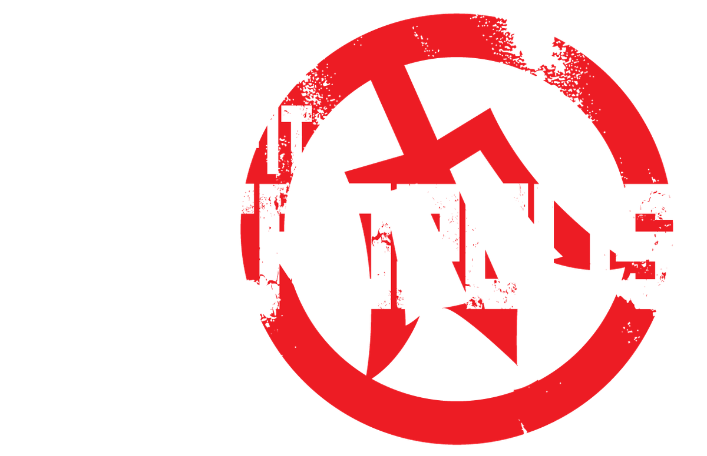
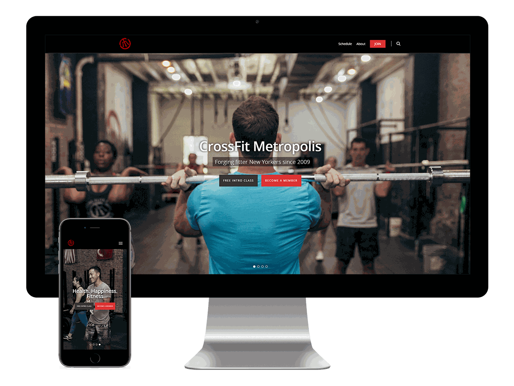
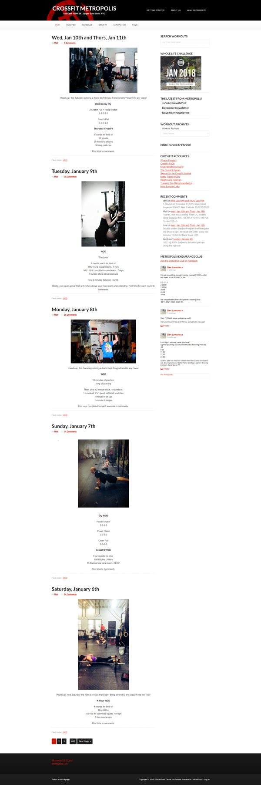
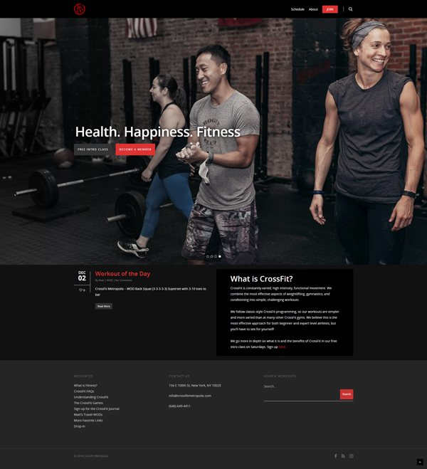

CrossFit Metropolis
In 2015 I redesigned the website for CrossFit Metropolis, a gym in New York City, working directly with its owners as a freelancer. The old site buried what people came for. I cut the homepage down to the workout of the day, a short answer to “what is CrossFit?” and a simpler path to sign up, and built the look around professional photography.


One homepage for every kind of visitor
Members check the site every day for the workout of the day; newcomers want to know what CrossFit is and how to start. I talked with the owners, took a class myself, and moved the most-used content into the hero and just below the fold. Old workouts went to an archive, and low-traffic links moved to the footer.
Before

After

Photography that sells the feeling
Text alone couldn't carry the gym's culture, so the design leans on professional photography built around four themes: fitter New Yorkers, a program that works for me, a community a traditional gym doesn't offer, and health and happiness through fitness.
The new photography carried over into the gym's later marketing campaigns.